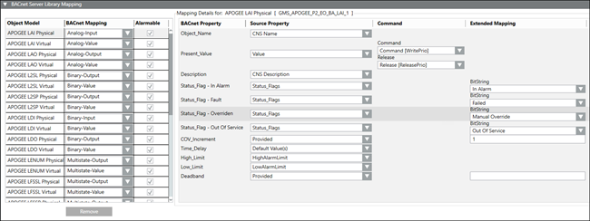

Library Mapping
The Library Mapping feature allows you to do the following:
- Map any Desigo CC objects to BACnet objects, property by property
- Map multiple instances of the same object, if different Present Values are used—for example, Phase 1, Phase 2, Phase 3
- Map Desigo CC alarms to BACnet alarms
- Enable alarming on templated objects (non-templated objects only support sending a value and commanding)
- Command and release supported properties
- Select bit strings for status flag properties, and also enter numerical values for some other properties
- Customize the Headquarter default template for use at the project level
- Add more object types to the Library Mapping template provided by Headquarter, or add more properties to existing object types
- Clone the default template for use at the allowed customization level
- Create a library-only EM to deliver a mapping template for several object models that belong to a specific subsystem. This can reduce labor on jobs if many sites have the same subsystem and want to use the BACnet Server.
When BACnet Server is installed, the associated library provides mapping for a device’s default value. If you want more detail, you can map your device objects using the BACnet Server Library Mapping feature, which is preinstalled with Headquarter defaults for object models and their associated properties.

Object Models and Properties
Each object model shows only properties that can be mapped to that type. If the Alarmable check box is selected for the object type, the Mapping Details section lists all available source properties. If the Alarmable check box is not selected for the object type, the Mapping Details section lists only non-alarmable BACnet properties.
NOTE: If you enable alarming on an object model in a template, all instances of that object model will be alarmable.
Property selection affects behavior in the following ways:
Property Type | Behavior |
Default Value(s) | BACnet Server determines the mapping. |
Not Applicable | BACnet Server does not display the property. |